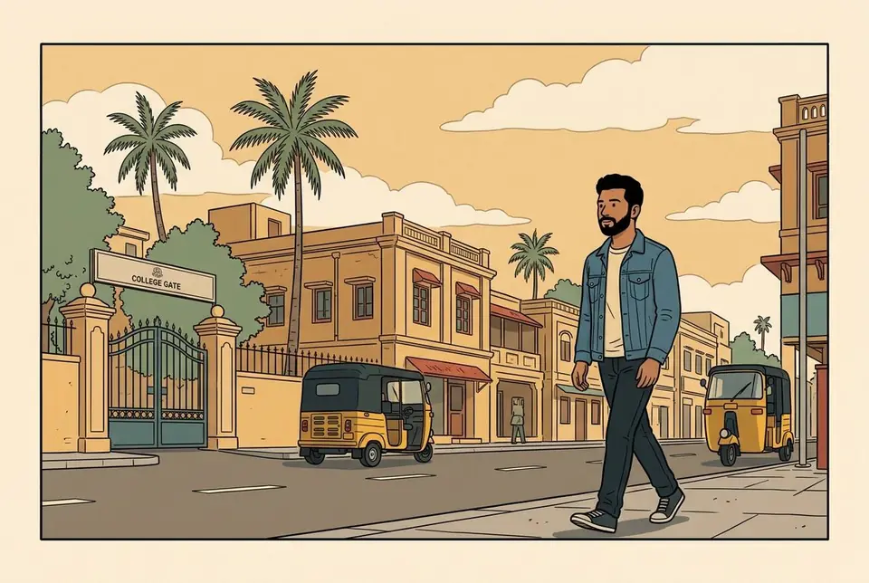

Stop 01 · Chennai, Tamil Nadu · 2018 to 2022
Solaris days
Electrical engineering at Sri Sairam Engineering College, Chennai by day, garage nights leading the Solaris solar car team.
We built a car that ran on sunlight and stubbornness, and took it all the way to the national podium.
#2national runner-up, two years running